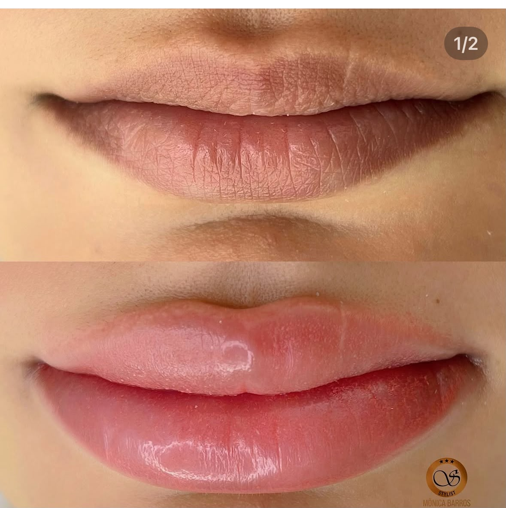
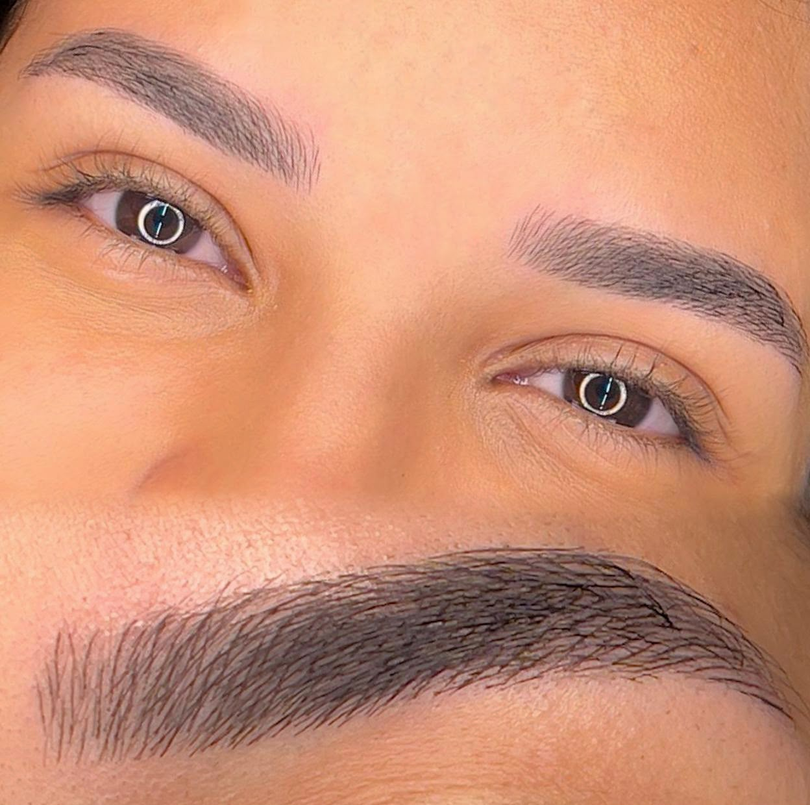
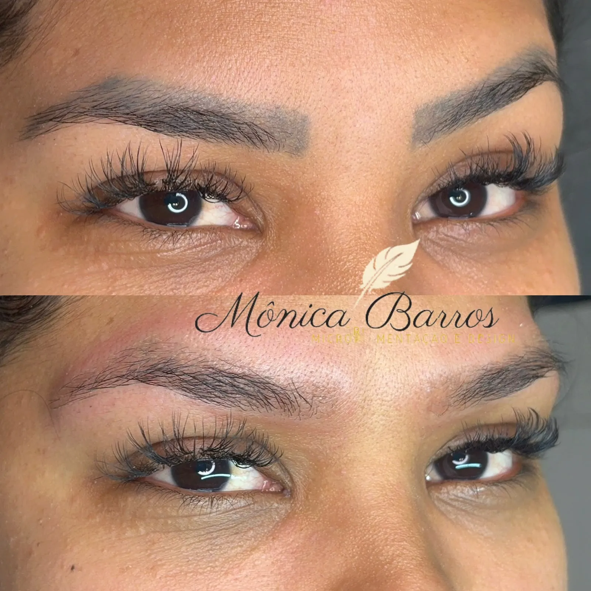
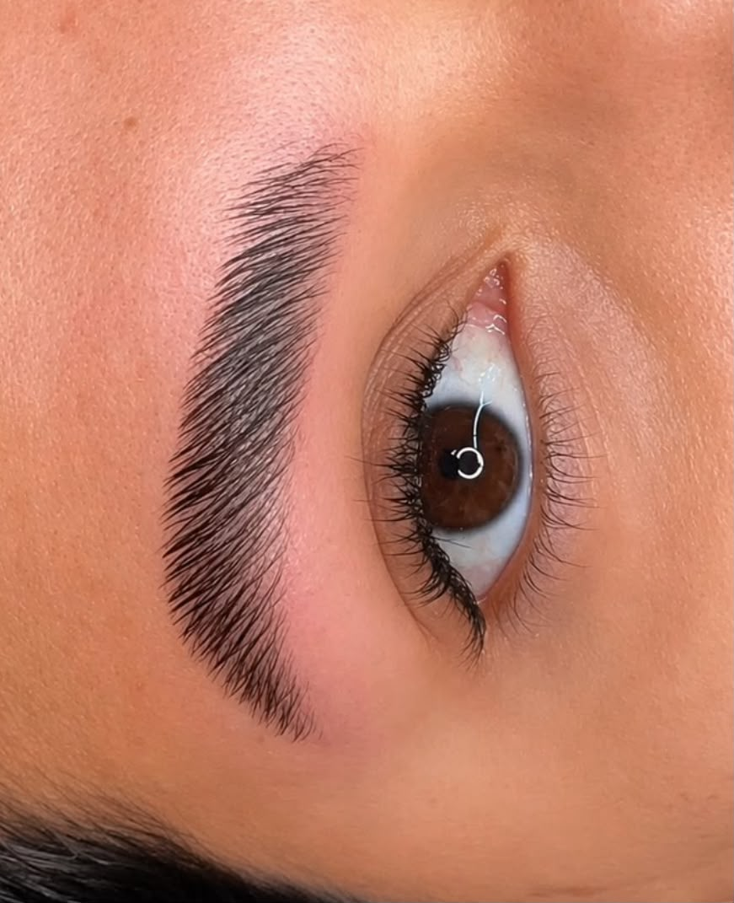
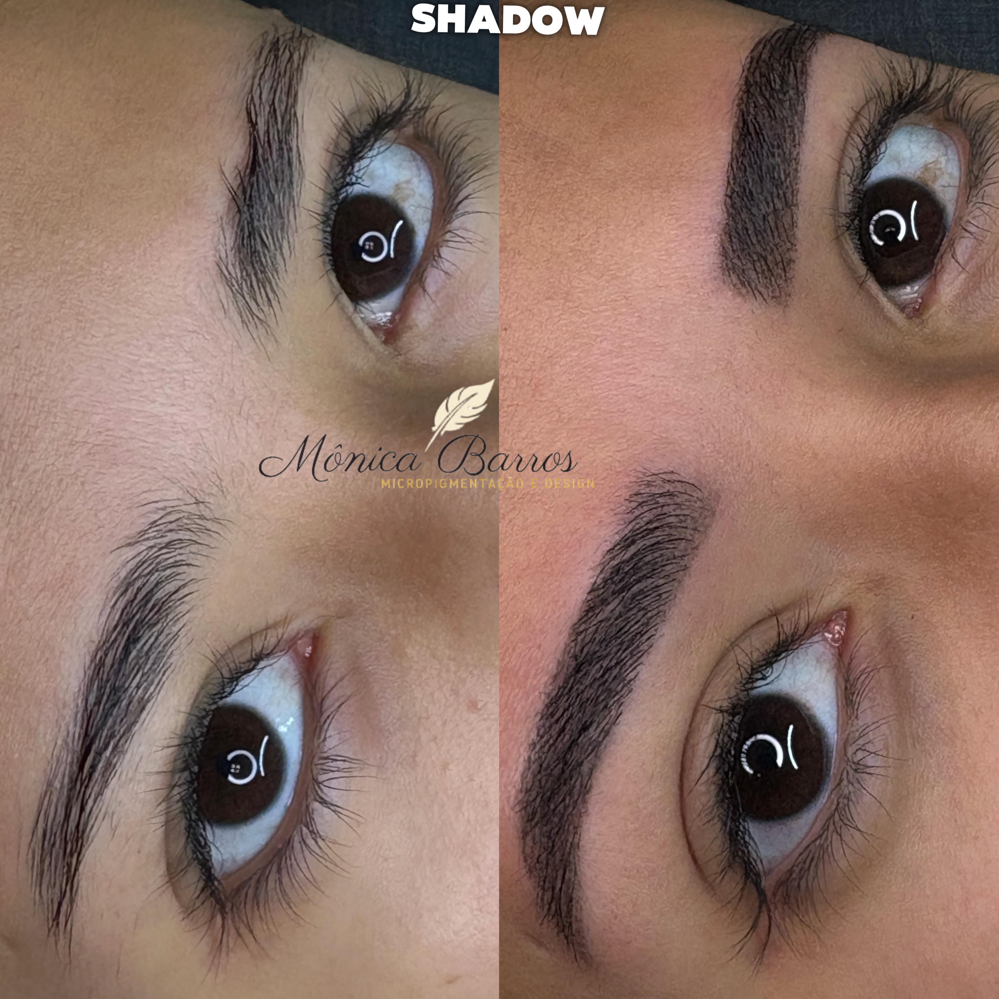
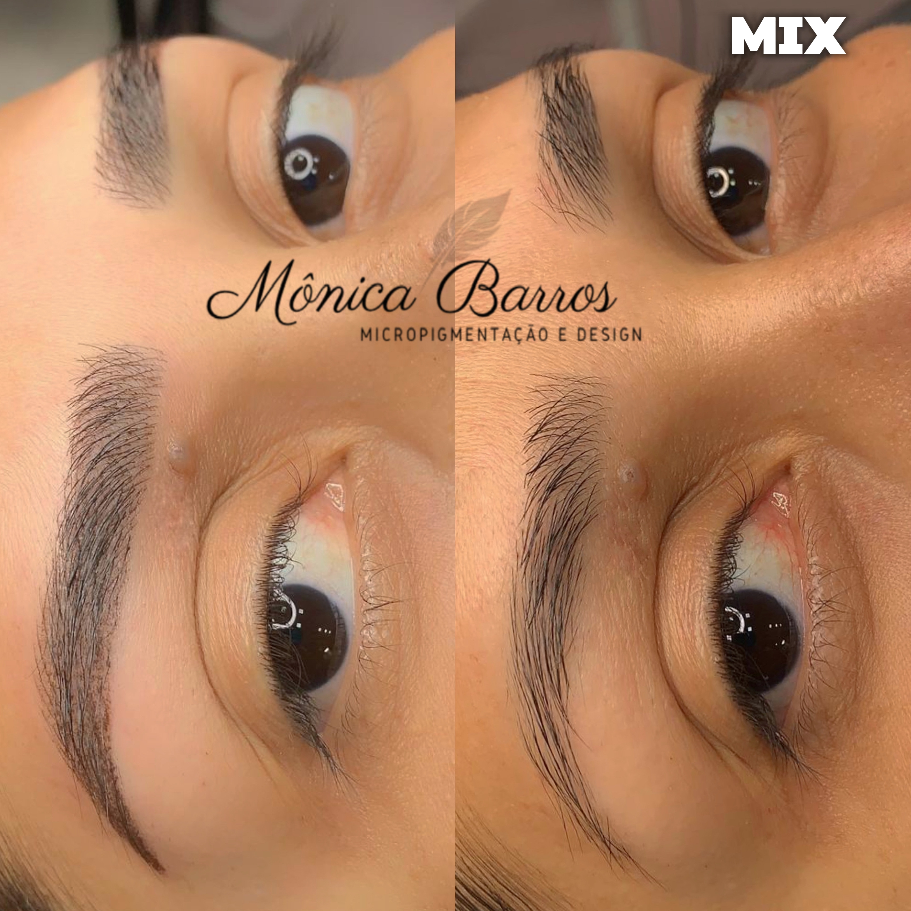

Micropigmentação Labial
- Realce da cor e do contorno
- Neutralização de lábios escurecidos
- Resultado personalizado e natural
Procedimentos personalizados para valorizar sua beleza, corrigir trabalhos antigos e recuperar sua autoestima com naturalidade e segurança.




Casos reais de micropigmentação e remoções com tecnologia avançada, preservando a saúde da pele.



Micropigmentação de Sobrancelha
Micropigmentação Labial
Remoção a Laser
Entre em contato para tirar dúvidas, consultar valores e verificar os horários disponíveis.
Antes do procedimento, analiso seu caso, suas expectativas e as condições da pele ou da região que será tratada.
O atendimento é realizado de forma individualizada, com atenção à higiene, segurança e aos detalhes de cada técnica.
Após o atendimento, você recebe orientações. Quando indicado, fazemos acompanhamento para avaliar cicatrização e retoques.
Sou Mônica Barros, especialista em sobrancelhas e apaixonada por transformar olhares de forma natural, segura e personalizada.
Atuo na área da beleza desde 2011 e sou especializada em micropigmentação desde 2015. Conquistei mais de 35 certificações em técnicas avançadas como microblading, shadow, labial e remoção a laser.
Durante duas temporadas no Egito, atendi aproximadamente 1.800 clientes, levando minha técnica para um público internacional exigente.
No Studio Mônica Barros, cada atendimento respeita os seus traços e personalidade, buscando resultados harmoniosos que elevam sua autoestima.
Laser de última geração exclusivo para nossos pacientes.
Protocolos baseados nos melhores centros do mundo.

"Já faço sobrancelha a linha há alguns anos, e já fui em diversos salões. Mas posso dizer que a Mônica definitivamente é a melhor que eu fui até agora. O design que ela faz é incrível, o resultado é maravilhoso. Tenho a sobrancelha bem cheia e ela limpou muito bem, sem afinar demais. Fora que o valor é bem acessível. Excelente custo-benefício. Virei cliente!!!"
"A Mônica é uma profissional muito habilitada para o trabalho que ela oferece, não confio em muitas pessoas para mexer em minhas sobrancelhas e gostei muito do design que fez nas minhas, foi pontual, educada, prestativa, além do espaço que é muito lindo, limpo e um ambiente agradável!!"
"Profissional e pessoa maravilhosa, amigável, gentil, simpática, tem mto bom gosto, sabe orientar, é paciente conosco. Amei minha sobrancelha, fez mta diferença para mim, na minha autoestima, eu tinha medo de fazer a micropigmentação, mas com a Mônica tive coragem, confiei! Super recomendo a Mônica Barros. S2"
(11) 98847-0138
Atendimento com horário agendado@studiomonicabarros
Acompanhe nossos trabalhosAv. Itamarati, 2325 - Parque Erasmo Assunção, Santo André - SP
Atendemos toda a região do ABCSegunda a Sábado
Com horário marcadoAgende sua avaliação agora e tire todas as suas dúvidas diretamente com quem realiza o procedimento.
chat Quero agendar